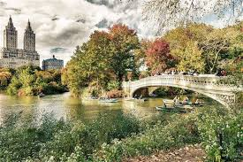

Photo by Randy Connolly
This photo of Conservatory Pond in Central Park New York City was taken on October 22, 2011 with a Canon EOS 30D camera.
By Ricardo on September 15, 2015
Easy on the HDR buddy.
By Susan on October 1, 2015
I love Central Park.